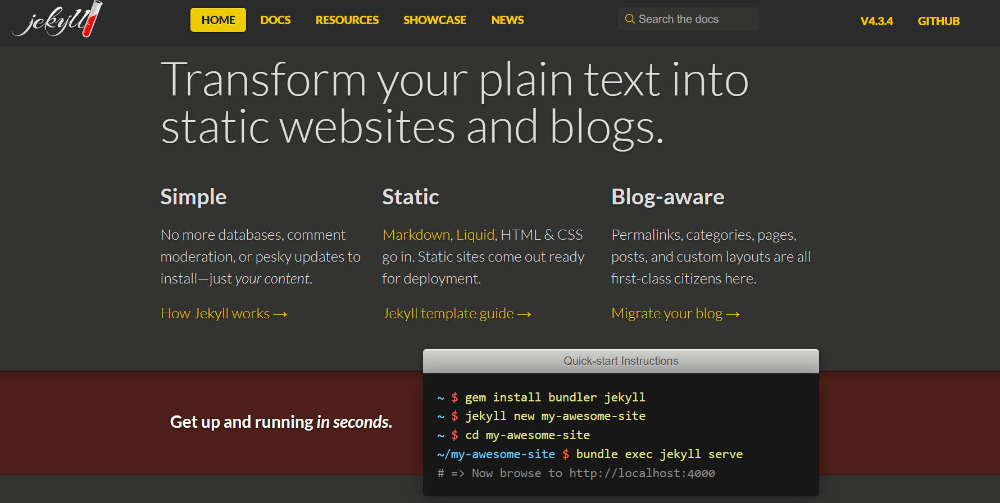

Published: October 1, 2024
Jekyll is a popular static site generator that makes building websites fast, simple, and SEO-friendly. In this blog post, we'll explore how to create a static website using Jekyll, covering the basics of setup, content creation, and deployment.
To get started with Jekyll, you'll need to have Ruby installed on your computer. Jekyll is built on Ruby, so it's essential to have it installed. You can download and install Ruby from the official website: https://www.ruby-lang.org/
Once you have Ruby installed, you can install Jekyll using the following command in your terminal:
gem install jekyllTo create a new Jekyll site, navigate to the directory where you want to store your website and run the following command:
jekyll new my-jekyll-siteThis will create a new directory called "my-jekyll-site" with the basic Jekyll site structure. Now, navigate into that directory:
cd my-jekyll-siteThe basic structure of a Jekyll site consists of the following:
To build your Jekyll site, simply run the following command in your terminal:
jekyll buildThis will generate an "_site" directory containing the static HTML files of your website. To preview your website locally, run the following command:
jekyll serveJekyll will start a local web server and you can access your website by opening the URL provided in the terminal. You can find detailed documentation and tutorials on the official Jekyll website: https://jekyllrb.com/.